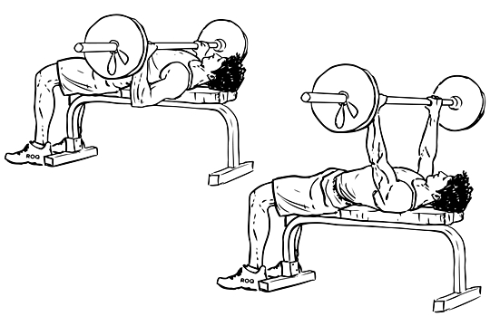

Hva er Styrketrening?
Styrketrening er all trening som er ment å øke eller vedlikehode en muskel eller muskelgruppes styrke. Grunnprinnsippet i styrketrening er at trening bryter ned kroppen, mens hvile og godt kosthold sørger for at den bygges opp igjen - gjerne litt sterke enn før. Det finnes mange ulike treningsmedoter innen styrketrening men vanligvis trener man med en form for ytre belastning, enten et styrkeapparat eller frivekter. Mange velger også å bruke egen kropp som belastning, noe som fungerer meget bra under øvelser som f.eks: knebøy, armhevning og kroppshevning.
Hvorfor trene styrke
Stor muskelkraft og styrke er ikke bare avgjørende for prestasjon innen idrett, men også for hvordan vi klarer oss i hverdagen.
Dette har blitt bevist gjennom intensiv forskning de siste årene og derfor drives styrketrening av mange ulike grupper, som idrettsutøvere, kroppsbyggere,
mosjonister og pasienter under rehabilitering.
I et helseperspektiv ser vi at styrketrening er spesielt viktig for den eldste delen av befolkningen for å vedlikehode muskelmasse og styrke.
I tillegg har styrketrening vist seg å ha positive virkninger i forhold til hjerte- og karfunksjon, boldsukkerregulering, beinmineraltetthet, depresjon og angst, vektkontroll og generell livskvalitet både hos unge og gamle.
De fleste av disse virkningene er med på å forebygge sykdomsutvikling.
Hvor skal jeg starte?
Det viktigste du må tenke på når du begynner med styrketrening er å ha fokus på riktig utføres av øvelsen. Begynn med lett belastning og lær deg riktig løfteteknikk slik at du unngår skader. Hvis du er helt ny innen styrketrening er lurt å holde seg til et enkelt program som fokuserer på baseøvelser, eksempler på slike øvelser er knebøy, benkpress, militærpress, pullups, stående roing og markløft.
Illustrasjoner av de "tre store" baseøvelsene.
Markløft
Knebøy
Benkpress



5 prinsipper for effektiv styrketrening
- Progresjon Gradvis økning av belastning under styrketrening vil la kroppen tilpasse seg nye krav og øke muskulær styrke over tid.
- Øke belastningen Belastning kan økes ved å øke treningstid, treningshyppighet, treningsintensitet eller gjennom restitusjon.
- Spesifisitet Det lønner seg å rette treningen mot der du ønsker å oppnå. Hvis du ønsker større og sterke musklatur så trener du styrke, mens de som ønsker økt oksygenopptak og kondisjon burde kanskje heller fokusere på intervaller.
- Individuell og helhetlig stimulering Alle mennesker er forskjellige og kanskje ikke knebøy er den beste øvelsen for din biomekaniske struktur, men man bør fortsatt trene hele kroppen. Variasjon
- Variasjon er sentralt i forbindelse med motivasjon og forebygging av belastningsskader. Hør på kroppen! Hvis du kjenner at en øvelse i styrkeprogrammet ditt begynner å gjøre vondt, prøve en annen øvelse. Vi vet også at det blir ganske kjedelig å kjøre det samme styrkeprogrammet i flere år, switch it up!

Når kan jeg se resultater?
Hvis du trener med riktig belastning, intensitet og hyppighet, spiser sunn mat i riktig mengde og får nok hvile så vil du raskt merke resultater. Kroppen er fantastisk flink til å tilpasse seg nye utfordringer, spesielt hvis du gir den de nevnte resurssene som trengs til restitusjon.
Tips for best resultat:
Husk oppvarming, spesielt kne og skulderledd.
God løfteteknikk vil hjelpe deg å unngå belastningsskader.
Fokuser først på baseøvelser, ta eventuelle isolasjonsøvelser til sist.
Ikke glem kosthold og søvn! Gi kroppen de resurrsene som trengs for restutisjon.